# Sql 性能下降原因
- 查询语句写的烂
- 索引失效
- 关联查询太多 join
- 服务器调优及各个参数设置
# Sql 执行加载顺序
手写顺序
select | |
join | |
from | |
where | |
group by | |
having | |
order by | |
limit |
机读顺序
from | |
on | |
join | |
where | |
group by | |
having | |
select | |
distinct | |
order by | |
limit |
# 七种 JOIN 理论
内连接
左连接
右连接
左连接获取 A 独有的部分，右连接获取 B 独有的部分
全连接 排除公有部分
# 索引
MySQL 官方对索引的定义为：索引（Index）是帮助 MySQL 高效获取数据的数据结构。
可以得到索引的本质：索引是数据结构。
你可以简单理解为 “排好序的快速查找数据结构 "
数据本身之外，数据库还维护着一个满足特定查找算法的数据结构，这些数据结构以某种方式指向数据，这样就可以在这些数据结构的基础上实现高级查找算法 这种数据结构就是索引。
一般来说索引本身也很大，不可能全部存储在内存中，因此索引往往以索引文件的形式存储的磁盘上
我们平常所说的索引，如果没有特别指明，都是指 B 树（多路搜索树，并不一定是二叉的）结构组织的索引。
# 优势
# 劣势
# 单值索引
# 唯一索引
# 复合索引

# 基础语法


# 索引结构
# 哪些情况建索引
# 哪些情况不适合建索引
# 性能分析
# MySql 常见瓶颈
# explain
# 作用
# 用法
explain 加 sql
# 能干啥
# id
id 相同，执行顺序由上到下
id 不相同，如果是子查询，id 的序号会递增，id 值越大优先级越高，越先被执行
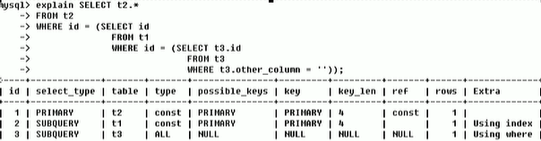
id 相同不同
# select_type
有哪些


# type
ALL: 全表扫描
system： 表只有一行记录（等于系统表），这是 const 类型的特列，平时不会出现，这个也可以忽略不计
const: 表示通过索引一次就找到了，const 用于比较 primary key 或者 unique 索引，因为只匹配一行数据，所以很快如将主键置于 where 列表中，MySQL 就能将该查询转换为一个常量
先执行 t1，然后衍生表，由于 id=1 直接索引到，然后衍生表查询就相当于一张表一条记录所以是 system
eq_ref: 唯一性索引扫描，对于每个索引键，表中只有一条记录与之匹配。常见子主键或唯一索引扫描
**ref: **
非唯一性索引扫描，返回匹配某个单独值的所有行.
本质上也是一种索引访问，它返回所有匹配某个单独值的行，然而，它可能会找到多个符合条件的行，所以他应该属于查找和扫描的混合体
**range: **
只检索给定范围的行，使用一个索引来选择行。key 列显示使用了哪个索引，一般就是在你的 where 语句中出现了 between，<、>、in 等的查询这种范围扫描索引扫描比全表扫描要好，因为它只需要开始于索引的某一点，而结束语另一点，不用扫描全部索引。
index
Full Index Scan，index 与 ALL 区别为 index 类型只遍历索引树。这通常比 ALL 快，因为索引文件通常比数据文小。
也就是说虽然 all 和 Index 都是读全表，但 index 是从索引中读取的，而 all 是从硬盘中读的）
# possible_key
# key
覆盖索引？
# key_len

# ref
# row
^
|
# Extra
覆盖索引：直接查询了索引数据，并没有回表，所以可能用到 key 为 null，而实际却用到了索引
下面两个比较少用
# 案例优化
# 索引分析
# 单表
# 建 sql
CREATE TABLE IF NOT EXISTS `article`( | |
`id` INT(10) UNSIGNED NOT NULL PRIMARY KEY AUTO_INCREMENT, | |
`author_id` INT (10) UNSIGNED NOT NULL, | |
`category_id` INT(10) UNSIGNED NOT NULL , | |
`views` INT(10) UNSIGNED NOT NULL , | |
`comments` INT(10) UNSIGNED NOT NULL, | |
`title` VARBINARY(255) NOT NULL, | |
`content` TEXT NOT NULL | |
); | |
INSERT INTO `article`(`author_id`,`category_id` ,`views` ,`comments` ,`title` ,`content` )VALUES | |
(1,1,1,1,'1','1'), | |
(2,2,2,2,'2','2'), | |
(3,3,3,3,'3','3'); | |
SELECT * FROM ARTICLE; |
# 案例

#查询 category-id 为 1 且 comments 大于 1 的情况下，views 最多的 article-id.
SELECT id,author_id FROM article WHERE category_id=1 AND comments > 1 ORDER BY views DESC limit 1 |
# 查看性能
EXPLAIN SELECT id,author_id FROM article WHERE category_id=1 AND comments > 1 ORDER BY views DESC limit 1 |
# 结论：
很显然，type 是 ALL，即最坏的情况.Extra 里还出现了 Using filesort，也是最坏的情况。优化是必须的。
# 开始优化
新建索引
CREATE INDEX idx_article_ccv ON article(category_id,comments,views) // 复合索引 |
第一次优化
走索引了但是还有文件排序，原因是使用了 comments>1 范围查找导致排序索引失效出现文件排序
删除索引
DROP INDEX idx_article_ccv ON article |
新建索引
CREATE INDEX idx_article_cv ON article(category_id,views) |
结果
EXPLAIN SELECT id,author_id FROM article WHERE category_id=1 AND comments > 1 ORDER BY views DESC limit 1 |
既用到索引又没有出现 Using filesort
注意：
# 两表
# 建 sql
CREATE TABLE IF NOT EXISTS `class`( | |
`id` INT(10) UNSIGNED NOT NULL PRIMARY KEY AUTO_INCREMENT, | |
`card` INT (10) UNSIGNED NOT NULL | |
); | |
CREATE TABLE IF NOT EXISTS `book`( | |
`bookid` INT(10) UNSIGNED NOT NULL PRIMARY KEY AUTO_INCREMENT, | |
`card` INT (10) UNSIGNED NOT NULL | |
); | |
INSERT INTO class(card)VALUES(FLOOR(1+(RAND()*20))); | |
INSERT INTO class(card)VALUES(FLOOR(1+(RAND()*20))); | |
INSERT INTO class(card)VALUES(FLOOR(1+(RAND()*20))); | |
INSERT INTO class(card)VALUES(FLOOR(1+(RAND()*20))); | |
INSERT INTO class(card)VALUES(FLOOR(1+(RAND()*20))); | |
INSERT INTO class(card)VALUES(FLOOR(1+(RAND()*20))); | |
INSERT INTO class(card)VALUES(FLOOR(1+(RAND()*20))); | |
INSERT INTO class(card)VALUES(FLOOR(1+(RAND()*20))); | |
INSERT INTO class(card)VALUES(FLOOR(1+(RAND()*20))); | |
INSERT INTO class(card)VALUES(FLOOR(1+(RAND()*20))); | |
INSERT INTO class(card)VALUES(FLOOR(1+(RAND()*20))); | |
INSERT INTO class(card)VALUES(FLOOR(1+(RAND()*20))); | |
INSERT INTO class(card)VALUES(FLOOR(1+(RAND()*20))); | |
INSERT INTO class(card)VALUES(FLOOR(1+(RAND()*20))); | |
INSERT INTO class(card)VALUES(FLOOR(1+(RAND()*20))); | |
INSERT INTO class(card)VALUES(FLOOR(1+(RAND()*20))); | |
INSERT INTO class(card)VALUES(FLOOR(1+(RAND()*20))); | |
INSERT INTO class(card)VALUES(FLOOR(1+(RAND()*20))); | |
INSERT INTO class(card)VALUES(FLOOR(1+(RAND()*20))); | |
INSERT INTO class(card)VALUES(FLOOR(1+(RAND()*20))); | |
INSERT INTO book(card)VALUES(FLOOR(1+(RAND()*20))); | |
INSERT INTO book(card)VALUES(FLOOR(1+(RAND()*20))); | |
INSERT INTO book(card)VALUES(FLOOR(1+(RAND()*20))); | |
INSERT INTO book(card)VALUES(FLOOR(1+(RAND()*20))); | |
INSERT INTO book(card)VALUES(FLOOR(1+(RAND()*20))); | |
INSERT INTO book(card)VALUES(FLOOR(1+(RAND()*20))); | |
INSERT INTO book(card)VALUES(FLOOR(1+(RAND()*20))); | |
INSERT INTO book(card)VALUES(FLOOR(1+(RAND()*20))); | |
INSERT INTO book(card)VALUES(FLOOR(1+(RAND()*20))); | |
INSERT INTO book(card)VALUES(FLOOR(1+(RAND()*20))); | |
INSERT INTO book(card)VALUES(FLOOR(1+(RAND()*20))); | |
INSERT INTO book(card)VALUES(FLOOR(1+(RAND()*20))); | |
INSERT INTO book(card)VALUES(FLOOR(1+(RAND()*20))); | |
INSERT INTO book(card)VALUES(FLOOR(1+(RAND()*20))); | |
INSERT INTO book(card)VALUES(FLOOR(1+(RAND()*20))); | |
INSERT INTO book(card)VALUES(FLOOR(1+(RAND()*20))); | |
INSERT INTO book(card)VALUES(FLOOR(1+(RAND()*20))); | |
INSERT INTO book(card)VALUES(FLOOR(1+(RAND()*20))); | |
INSERT INTO book(card)VALUES(FLOOR(1+(RAND()*20))); | |
INSERT INTO book(card)VALUES(FLOOR(1+(RAND()*20))); |
# 案例
EXPLAIN SELECT * FROM class LEFT JOIN book on book.card = class.card |
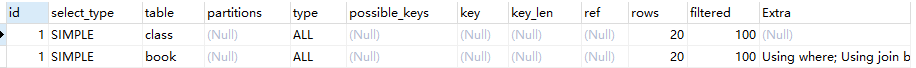
左右外连接加索引
测试，先给右表 book 加索引，查看结果
ALTER TABLE book ADD INDEX Y (`card`); |
测试，给左表加索引，结果
左连接因为左表要全部出现
# 总结
左连接索引建到右表，右连接则相反，给主表的相反表建索引
# 三表
# 建 sql
CREATE TABLE IF NOT EXISTS `phone`( | |
`phoneid` INT(10) UNSIGNED NOT NULL PRIMARY KEY AUTO_INCREMENT, | |
`card` INT (10) UNSIGNED NOT NULL | |
)ENGINE = INNODB; | |
INSERT INTO phone(card)VALUES(FLOOR(1+(RAND()*20))); | |
INSERT INTO phone(card)VALUES(FLOOR(1+(RAND()*20))); | |
INSERT INTO phone(card)VALUES(FLOOR(1+(RAND()*20))); | |
INSERT INTO phone(card)VALUES(FLOOR(1+(RAND()*20))); | |
INSERT INTO phone(card)VALUES(FLOOR(1+(RAND()*20))); | |
INSERT INTO phone(card)VALUES(FLOOR(1+(RAND()*20))); | |
INSERT INTO phone(card)VALUES(FLOOR(1+(RAND()*20))); | |
INSERT INTO phone(card)VALUES(FLOOR(1+(RAND()*20))); | |
INSERT INTO phone(card)VALUES(FLOOR(1+(RAND()*20))); | |
INSERT INTO phone(card)VALUES(FLOOR(1+(RAND()*20))); | |
INSERT INTO phone(card)VALUES(FLOOR(1+(RAND()*20))); | |
INSERT INTO phone(card)VALUES(FLOOR(1+(RAND()*20))); | |
INSERT INTO phone(card)VALUES(FLOOR(1+(RAND()*20))); | |
INSERT INTO phone(card)VALUES(FLOOR(1+(RAND()*20))); | |
INSERT INTO phone(card)VALUES(FLOOR(1+(RAND()*20))); | |
INSERT INTO phone(card)VALUES(FLOOR(1+(RAND()*20))); | |
INSERT INTO phone(card)VALUES(FLOOR(1+(RAND()*20))); | |
INSERT INTO phone(card)VALUES(FLOOR(1+(RAND()*20))); | |
INSERT INTO phone(card)VALUES(FLOOR(1+(RAND()*20))); | |
INSERT INTO phone(card)VALUES(FLOOR(1+(RAND()*20))); |
# 案例
EXPLAIN SELECT * FROM class c LEFT JOIN book b ON b.card = c.card LEFT JOIN phone p ON p.card = b.card |
上面未建索引，根据前面两表我们得知给非主表建立索引性能更高，因为主表要显示全部，所以这里 给 book 和 phone 建立 card 索引
ALTER TABLE book add INDEX X(`card`) | |
ALTER TABLE phone add INDEX Y(`card`) | |
EXPLAIN SELECT * FROM class c LEFT JOIN book b ON b.card = c.card LEFT JOIN phone p ON p.card = b.card |

# 结论

# 索引失效
CREATE TABLE staffs( | |
id INT PRIMARY KEY AUTO_INCREMENT, | |
`name` VARCHAR(24)NOT NULL DEFAULT'' COMMENT'姓名', | |
`age` INT NOT NULL DEFAULT 0 COMMENT'年龄', | |
`pos` VARCHAR(20) NOT NULL DEFAULT'' COMMENT'职位', | |
`add_time` TIMESTAMP NOT NULL DEFAULT CURRENT_TIMESTAMP COMMENT'入职时间' | |
)CHARSET utf8 COMMENT'员工记录表'; | |
INSERT INTO staffs(`name`,`age`,`pos`,`add_time`) VALUES('z3',22,'manager',NOW()); | |
INSERT INTO staffs(`name`,`age`,`pos`,`add_time`) VALUES('July',23,'dev',NOW()); | |
INSERT INTO staffs(`name`,`age`,`pos`,`add_time`) VALUES('2000',23,'dev',NOW()); | |
ALTER TABLE staffs ADD INDEX index_staffs_nameAgePos(`name`,`age`,`pos`) |
# 全值匹配
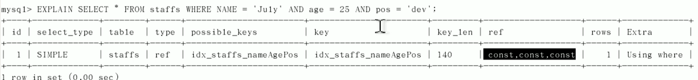

# 索引列少计算少用 mysql 函数
范围索引失效，上面 name，范围 age 也用到了，但是 pos 没用到索引失效了
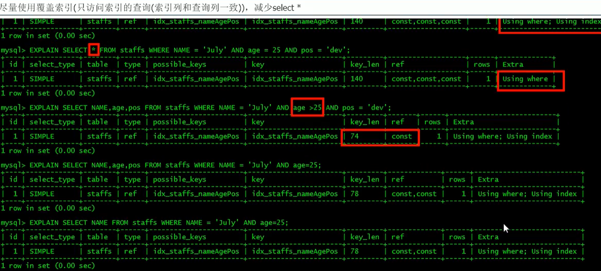
8.0mysql 优化了！= 变为 range 了
解决：使用覆盖索引，即查询字段即都是索引字段
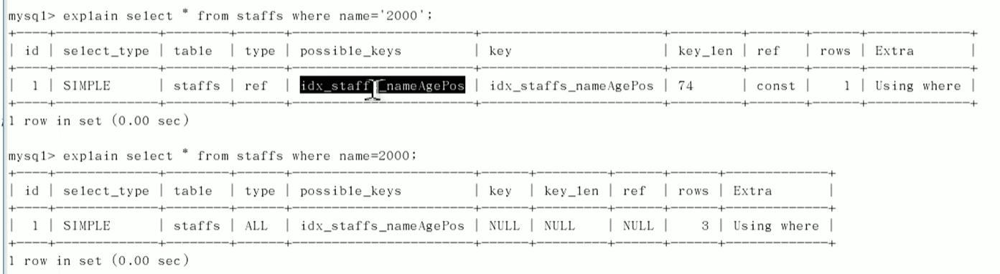
# 索引面试题分析
https://www.bilibili.com/video/BV1KW411u7vy?p=44
vachar 引号不能丢
# 查询截取分析
# 小表驱动大表
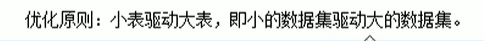
# order 排序优化
下面例子都是看 order by 会不会产生 Using filesort
双路排序
单路排序
# 为排序使用索引
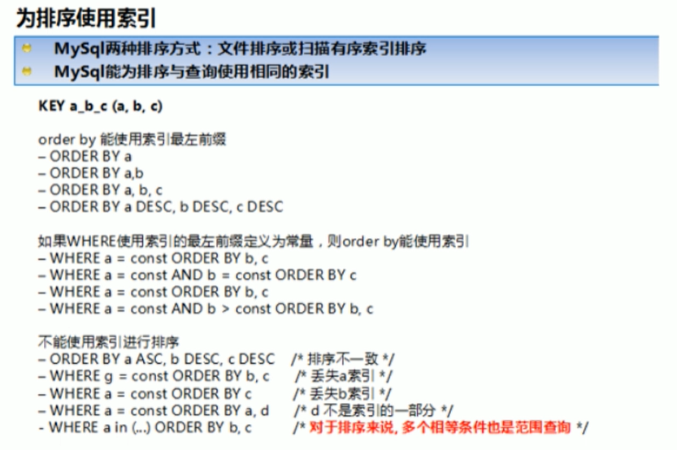
# groupby 优化
基本等同于 order by 优化
# 慢查询日志
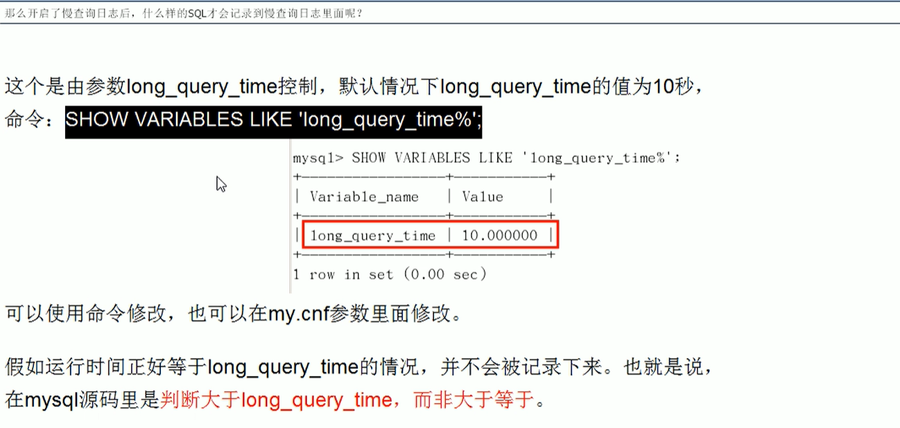
# 日志分析工具

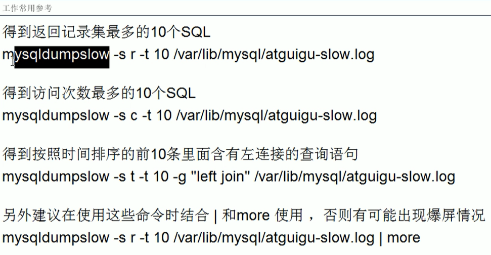
# 批量插入数据库脚本
CREATE TABLE dept( | |
id INT UNSIGNED PRIMARY KEY AUTO_INCREMENT, | |
deptno MEDIUMINT UNSIGNED NOT NULL DEFAULT 0, | |
dname VARCHAR(20) NOT NULL DEFAULT "", | |
loc VARCHAR(13) NOT NULL DEFAULT "" | |
) ENGINE=INNODB DEFAULT CHARSET=GBK ; | |
CREATE TABLE emp( | |
id INT UNSIGNED PRIMARY KEY AUTO_INCREMENT, | |
empno MEDIUMINT UNSIGNED NOT NULL DEFAULT 0, | |
ename VARCHAR (20) NOT NULL DEFAULT "", | |
job VARCHAR (9) NOT NULL DEFAULT "", | |
mgr MEDIUMINT UNSIGNED NOT NULL DEFAULT 0, | |
hiredate DATE NOT NULL, | |
sa1 DECIMAL (7,2) NOT NULL, | |
comm DECIMAL (7,2) NOT NULL, | |
deptno MEDIUMINT UNSIGNED NOT NULL DEFAULT 0 | |
)ENGINE=INNODB DEFAULT CHARSET=GBK; |
# 插入 1000w 数据
设置参数
# 创建函数
# 随机产生字符串
DELIMITER $$ | |
CREATE FUNCTION rand_string(n INT) RETURNS VARCHAR(255) | |
BEGIN | |
DECLARE chars_str VARCHAR(100) DEFAULT 'abcdefghijklmnopqrstuvwxyz'; | |
DECLARE return_str VARCHAR(255) DEFAULT ''; | |
DECLARE i INT DEFAULT 0; | |
WHILE i < n DO | |
SET return_str = CONCAT(return_str,SUBSTRING(chars_str,FLOOR(1+RAND() * 52),1)); | |
SET i = i + 1; | |
END WHILE; | |
RETURN return_str; | |
END $$ |
# 随机产生部门编号
DELIMITER $$ | |
CREATE FUNCTION rand_num() RETURNS INT(5) | |
BEGIN | |
DECLARE i INT DEFAULT 0; | |
set i = FLOOR(100 + RAND()*10); | |
RETURN i; | |
END $$ |
# 创建存储过程

DELIMITER $$ | |
CREATE PROCEDURE insert_emp(IN START INT(10),IN max_num INT(10)) | |
BEGIN | |
DECLARE i INT DEFAULT 0; | |
SET autocommit = 0; | |
REPEAT | |
SET i = i + 1; | |
INSERT INTO emp(empno,ename,job,mgr,hiredate,sal,comm,deptno) VALUES((START + i),rand_string(6),'SALESMAN',0001,CURDATE(),2000,400,rand_num()); | |
UNTIL i = max_num END REPEAT; | |
COMMIT; | |
END $$ |
DELIMITER $$ | |
CREATE PROCEDURE insert_dept(IN START INT(10),IN max_num INT(10)) | |
BEGIN | |
DECLARE i INT DEFAULT 0; | |
SET autocommit = 0; | |
REPEAT | |
SET i = i + 1; | |
INSERT INTO dept(deptno,dname,loc) VALUES((START + i),rand_string(10),rand_string(8)); | |
UNTIL i = max_num | |
END REPEAT; | |
COMMIT; | |
END $$ |
# 调用存储过程
CALL insert_dept(100,10); // 从 100 开始添加 10 条 | |
SELECT * FROM dept | |
CALL insert_dept(100001,500000); // 添加 50w 数据 |
# Show Profile
SHOW VARIABLES LIKE 'profiling' 查看是否开启
# 诊断 sql
show PROFILE cpu,block io for query + queryId


日常开发需要注意的结论
# 全局查询日志
# 数据库锁
-- 锁表 | |
LOCK TABLE mylock read,book write | |
SHOW OPEN TABLES |
# 加读锁
# 加写锁
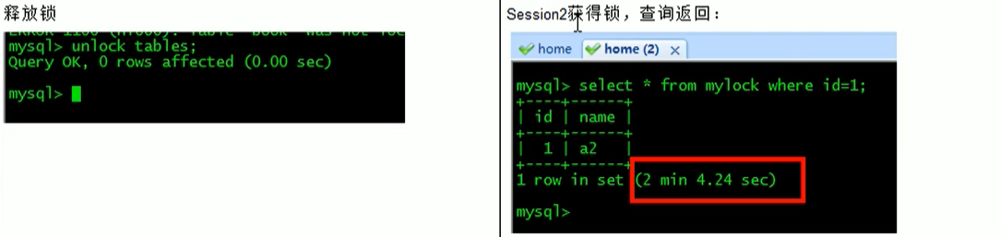
简而言之，就是读锁会阻塞写，但是不会阻塞读，而写锁 则会把读和写都阻塞。
# 行锁

# 索引失效行锁变表锁
比如 varchar 类型 a='10' 改为 a=10 就会导致索引失效，就会导致行锁变表锁
# 间隙锁
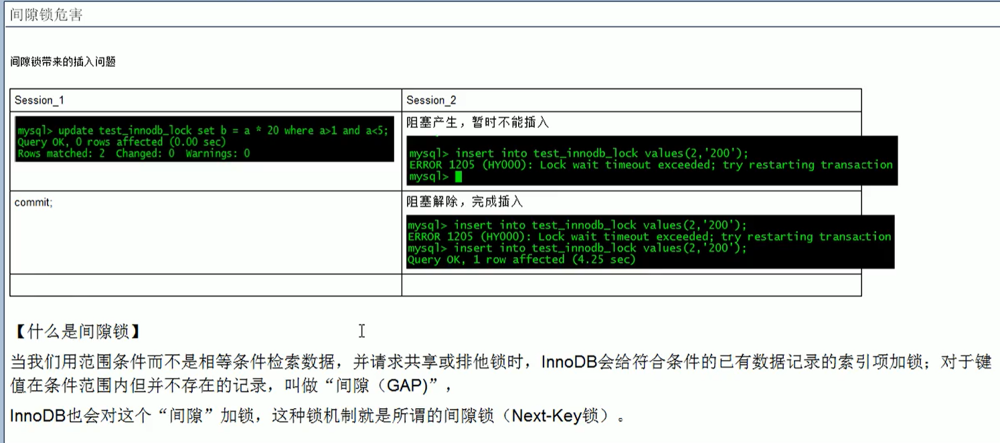
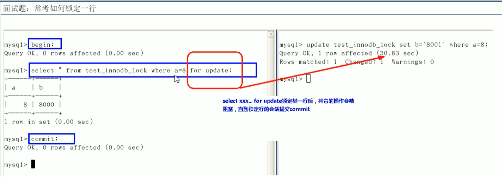
# 总结

# 主从复制
# 复制基本原理
# 复制的基本原则
复制的最大问题：延迟
# 一主一从常见配置
# 主机配置 my.ini 流程
1、server-id=1
2、
3
4
5 6 7 8 9
# 从机配置 my.cnf
# 主机建立账户并授权
file 哪个二进制文件，position 从哪里开始
# 从机配置需要复制的主机
file position 填主机查询的结果